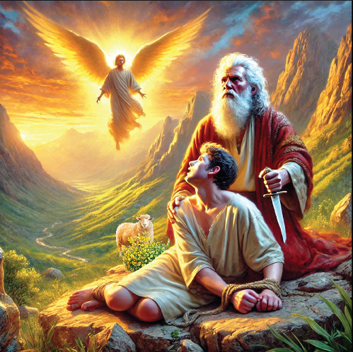

of Israel, (c) Isaac was the only son of Abraham and Sarah, (d) Isaac is the father of Jacob and Esau, (e) Isaac trusted in God’s promises.
Activity 4.5
Read Genesis 16 and 17, and explain key factors in the life story of Isaac and show their relevance today.
The meaning of Beer-Sheba
This word ‘Beer-Sheba’ means the well of seven. It is the well of oath, because it was where Abraham made the oath of loyalty to King Abimelech. The well of seven refers to the seven lambs that Abraham gave to Abimelech to acknowledge the ownership of the well. It is a covenant between Abraham and Abimelech.
Abraham’s test of faith
God instructed Abraham to sacrifice his son Isaac as a test of his faithfulness to Him. Abraham walked with God, he responded to God’s call, he showed his obedience and faith to God. Abraham believed in the promises that God gave him, and he was ready to sacrifice Isaac as a burnt offering to God. Figure 4.7 portrays Abraham sacrifice of his son.

Activity 4.6
Use library and internet sources, and read Genesis 22, then write down five lessons you have learnt from Abraham’s sacrifice.